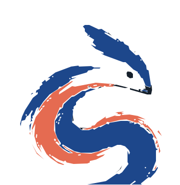

GOOD PEOPLE · GOOD IDEAS · MORE TO COME
Your world is bigger than you think.
We're building a Jewish network where young adults can meet experienced professionals, explore what interests them, and help shape new possibilities.

A little curiositygoes a long way.
START WITH WHAT SPARKS YOUR CURIOSITY
What might be possible?
Choose the fields you'd like to understand better. This helps us find out what people want to explore as the network grows.
TWO SIDES OF ONE NETWORK
One good introduction can change everything.
For young adults: explore a field, ask a real person, and tell us what you'd like to learn. For established professionals: share a conversation, demonstrate your work, or discuss opening access to your workplace.
AN INVITATION TO PROFESSIONALS & EMPLOYERS
What you've learned could change someone's path.
We're recruiting people and workplaces willing to make professional worlds more accessible. Start with a conversation. We'll build from there.
Help build the network